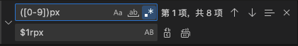

起因
在做小程序是，经常会遇到从其他地方复制过来的样式，单位是px，如spritecow精灵图选择工具，这里只是单位不同，数值是不需要改的
比如这段样式1
2
3
4
5.sprite {
background: url('imgs/sp.png') no-repeat -19px -380px;
width: 404px;
height: 74px;
}
放在小程序的wxss中应该是1
2
3
4
5.sprite {
background: url('imgs/sp.png') no-repeat -19rpx -380rpx;
width: 404rpx;
height: 74rpx;
}
我们只需要替换后面的单位，而不需要转换数值，这个时候可以使用node库 any2rem，但是这样做显然太麻烦。
当然如果页面中只有需要将px，使用vscode或其他ide自带的批量替换px 为rpx完全没问题。
但是如果这个时候页面中已经有很多写好的小程序样式，比如1
2
3
4
5
6
7
8
9
10.container {
width: 750rpx;
height: 1624rpx;
}
...
.sprite {
background: url('imgs/sp.png') no-repeat -19px -380px;
width: 404px;
height: 74px;
}
这个时候使用批量替换就有问题了会将已经写好的css中的样式替换成750rrpx,这个时候你又得再将rrxp再替换成rpx
这样做就太呆了，其实可以使用vscode的正则替换

批量替换是点选.*打开正则模式，然后再查找输入框里写正则表达式，这里需要将数字部分用圆括号括起来，因为数字这部分不能替换成一个值，要根据替换前的值原封不等的替换回去，圆括号里就相当于保存了一个变量
在替换输入框里写上$1rpx
这里的$1即表示查找输入框里被括号包裹的变量，当然如果不止一个变量，还可以使用多个括号，同理从左到右依次是$1,$2,$3 …